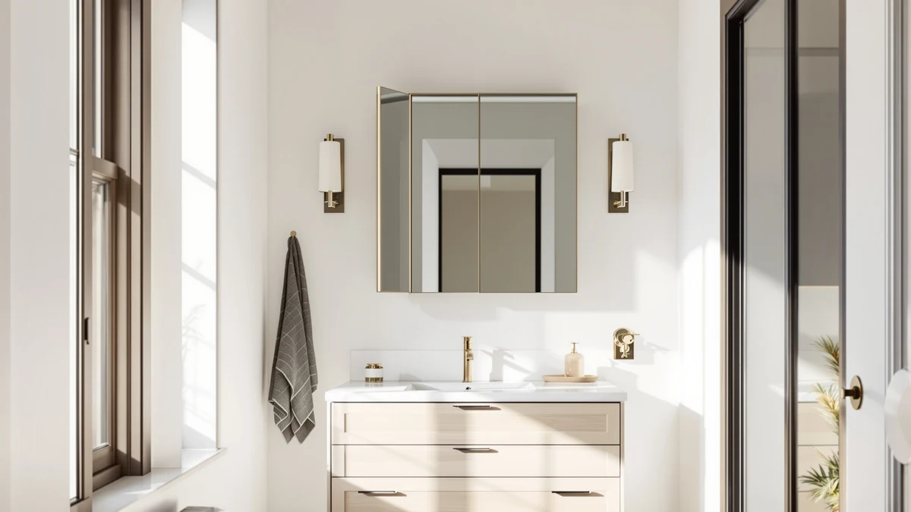

The Best Tri-fold Medicine Cabinets (2026)
Prices and picks verified as of August 2026. Independent, reader-supported reviews.


Quick Answer
If you searched for a tri-fold medicine cabinet, the closest true match in our lineup is the HUONUL trifold vanity mirror: a three-panel mirror with 2X/3X/10X magnification for $23.99. We also compared six alternatives, from an actual LED-lit medicine cabinet to vanity lighting upgrades, for buyers who need more storage, a bigger mirror, or just better light over the sink.
Our pick: HUONUL Makeup Mirror Vanity Mirror — $23.99 Check Price on Amazon
Bottom line: our top pick is the HUONUL Makeup Mirror at $27.99. The best budget option is the 60IN Bathroom Vanity with Double Sink at $2.
Things to Know Before You Buy
- "Tri-fold" usually means a three-panel mirror, not a three-door cabinet. Check the listing photos before buying if storage is your goal.
- Medicine cabinets with built-in LED lighting cost more upfront but save you from adding a separate light fixture later.
- Anti-fog and demister features only clear the mirror surface, not the whole bathroom, so run your exhaust fan too.
- Bulb-free fixtures like vanity sconces add to your total cost, so factor in E26 bulbs before comparing prices.
- Measure your vanity width before ordering: mirrors and cabinets sized for double sinks look oversized over a single basin.
Search for a "tri-fold medicine cabinet" and you'll find most listings labeled that way are actually trifold vanity mirrors: three hinged panels that fold in for a closer view, not a cabinet with three storage doors. We built this guide around that reality. The products below cover the trifold mirror shoppers are usually after, plus the medicine cabinets, LED mirrors, and lighting upgrades that solve the same bathroom problem from a different angle.
The lineup runs from a $9.99 stick-on LED strip to a $2,187.66 double-sink vanity with a built-in mirror cabinet, so price and purpose vary widely here. If you want an actual medicine cabinet with a door and shelves, the Janboe oval cabinet is the only true match. If you want the closest thing to a classic tri-fold, the HUONUL magnifying mirror is it.
For everyone in between, buyers who already have a mirror or cabinet and just need better light, or who are planning a full vanity swap, we've included both ends of that spectrum. Each pick below covers what the product actually is, what it's best for, and where it falls short, so you can match the product to the job instead of the keyword.
Why You Should Trust Us
I'm Ilane Tall, and I cover bathroom fixtures and fittings for Best Bathroom Mirrors. Because search results for niche terms like "tri-fold medicine cabinet" often mix genuinely different product types, I read full listings, spec sheets, and verified buyer reviews for each pick here rather than relying on category tags alone, so I can tell you plainly when a product isn't what its search term implies.
We earn a commission through the Amazon links on this page, but that never decides which products make the list. Where a product doesn't fit the search term it's filed under, or falls short on build quality, you'll read that here rather than a glossed-over pitch.
How We Picked
We started from the search term itself and pulled every mirror, cabinet, and lighting product tagged for this category, then sorted them by what they actually are: a true tri-fold mirror, a medicine cabinet, a full vanity, or a lighting accessory. We kept products from each of those groups so the guide covers real alternatives rather than seven near-duplicates. From there we weighed price spread, standard vanity sizing (single vs. double sink), and features specific to each product type, including magnification levels for mirrors, hinge and shelf details for the cabinet, and socket compatibility for the light fixtures.
How We Compared
We compared manufacturer specs, listing photos, and verified owner reviews across every pick, focused on the details a spec sheet alone won't reveal: how bright the LED lighting reads at arm's length, whether anti-fog or demister claims hold up in reviewer feedback, and how buyers describe the hardware after months of use, including hinge wear on the medicine cabinet, adhesive longevity on the stick-on light strip, and dimming behavior on the vanity sconce. We cross-referenced pricing against typical ranges for each product type so a $9.99 light strip isn't judged by the same yardstick as a $2,187.66 vanity.
Our Picks

HUONUL Makeup Mirror Vanity Mirror
What we like
- Touch-control LED lights the whole face evenly, without the harsh shadows of a single overhead bulb
- 2X, 3X, and 10X panels cover everything from full-face checks to lash-level detail work
- Dual power supply (battery or USB) means it works on a counter with no outlet nearby
- Compact 9.4-by-13.4-inch footprint fits small vanities and dorm desks
Flaws but not dealbreakers
- No wall-mount option, so it takes up counter space rather than hanging flush like a cabinet
- Plastic housing feels lighter-duty than the steel-framed medicine cabinet in this guide
| Material | Tempered glass + aluminum |
| Size | 9.4"L x 13.4"W |
The HUONUL is the pick that actually matches what most people mean by "tri-fold": three hinged mirror panels, with the two side wings angling in for a wider or more magnified view than a single flat mirror gives you. The 2X, 3X, and 10X magnification steps mean you can go from a normal full-face check to lash-level detail without switching mirrors, and the touch-control LED ring lights the face evenly from three sides instead of casting shadows from one angle.
Because it runs on battery power or USB rather than a wall connection, setup is just unboxing it and setting it on a counter. That also means it won't replace a mounted medicine cabinet if storage is what you're after; it's a mirror only, so pair it with a cabinet or drawer for the toiletries it doesn't hide.

SHUAFA LED Mirror for Bathroom
What we like
- Dual backlit and front-lit strips give more even illumination than the single-strip mirrors it competes against
- Anti-fog film covers 60% of the surface, larger than most competing demister mirrors
- Brightness memory keeps your last setting instead of resetting every time you flip the switch
- ETL certified with UL-listed electronics rated for over 50,000 hours
Flaws but not dealbreakers
- At $295.95, this is a major spend for a mirror alone, before any vanity or cabinet cost
- The 72-inch span needs a wall with clear stud access for a secure mount
| Material | Tempered glass + aluminum |
| Size | 72"L x 32"W |
If your double vanity has inadequate lighting, the SHUAFA solves that directly. The 240 LEDs-per-meter strips run both behind and in front of the glass, so the light reads as even, shadow-free illumination rather than a bright edge with a dim center, which is the usual complaint with cheaper backlit-only mirrors. The anti-fog film covering 60% of the surface also does double duty as a demister, so the mirror stays clear right after a shower.
This is the priciest pick in the guide, and it's a mirror only, with no shelves or door behind the glass. Buy it if you're upgrading the mirror over an existing double vanity; if you also need storage, pair it with a separate medicine cabinet or look at the Janboe pick below instead.

60IN Bathroom Vanity with Double
What we like
- Integrated mirror cabinet hides toiletries behind the glass instead of leaving them on the counter
- Rock-plate countertop resists scratches and the damp bathroom environment better than laminate
- Two sinks cut down the morning bottleneck in a shared bathroom
- Built-in time display in the mirror cabinet is a small but genuinely useful extra
Flaws but not dealbreakers
- At $2,187.66 and 60 inches wide, this only makes sense as part of a full remodel, not a quick cabinet swap
- Installation is a bigger job than a standalone cabinet and will likely need a plumber for the sinks
| Material | Tempered glass + aluminum |
| Size | 60" |
This is the pick for buyers asking "what do I put over my double vanity" instead of "which mirror should I buy." The 60-inch unit bundles two sinks, an LED defogging mirror cabinet with hidden shelving, and a rock-plate countertop into one purchase, which sidesteps the job of matching a mirror, a cabinet, and a vanity from three separate listings.
The price and scope put it in a different category from every other product in this guide. If you're already planning a full vanity replacement, it's a reasonable one-stop option; if you just need a mirror or a medicine cabinet, the smaller, cheaper picks elsewhere on this page will get you there for a fraction of the cost.

FonmYim Brushed Nickel Bathroom Light
What we like
- 17.3-inch span fits the two most common single-sink mirror widths (24 and 30 inches) without overhanging
- ETL-certified ceramic sockets take any E26 bulb style: incandescent, CFL, halogen, or LED
- Milky white frosted glass shades soften glare instead of throwing a harsh direct beam
- Brushed nickel finish matches most cabinet and faucet hardware
Flaws but not dealbreakers
- Bulbs aren't included, so factor that cost in before comparing the price to a light strip
- Full dimming needs a compatible dimmer switch and dimmable bulb, both sold separately
| Material | Tempered glass + aluminum |
| Size | 3-light |
If the mirror or medicine cabinet you already own works fine but the lighting above it doesn't, the FonmYim is the fix. It's a standard hardwired vanity sconce, not a mirror or cabinet, so it mounts to an existing electrical box over your current fixture rather than replacing it. The 17.3-inch width lines up with the most common single-sink mirror sizes, and the frosted glass shades spread the light instead of creating a glare spot.
Because it ships without bulbs, the real price is a few dollars higher once you add three E26 bulbs. It's also a straight light fixture, so it won't add storage or magnification; it just makes whatever mirror or cabinet you already have easier to see in.

DLOMT Vanity Lights for Mirror
What we like
- Self-adhesive install takes minutes and needs no electrician or wall drilling
- 3 color temperatures, from 3000K warm to 6500K daylight, cover most skin-tone lighting preferences
- 10-level dimming built into the strip, no separate dimmer switch required
- Cheapest fix in this guide at $9.99
Flaws but not dealbreakers
- Reads as an add-on strip rather than a built-in fixture, so it won't match the finish of a hardwired sconce
- Adhesive backing isn't meant to be repositioned often once it's stuck to the glass
| Material | Tempered glass + aluminum |
| Size | 10 feet |
The DLOMT is the cheapest way to fix bad mirror lighting without touching your wiring. The 10-foot strip sticks directly to the mirror frame or edge, runs on 108 LED beads (nearly double what most competing strips use), and switches between three color temperatures so you can match warm bathroom lighting or a cooler daylight setting.
It's a lighting accessory, not a mirror or cabinet on its own, and the mirror it sticks to is sold separately. Treat it as the budget upgrade for an existing mirror or medicine cabinet rather than a standalone pick, and expect the adhesive to be a one-time placement rather than something you'll peel and restick regularly.

Janboe Oval Medicine Cabinet with
What we like
- Soft-close hinge prevents the door slam that's a common complaint on cheaper medicine cabinets
- Built-in USB shaver socket saves you from running an extension cord to the vanity
- 3 adjustable color temperatures cover makeup, shaving, and relaxed-ambiance lighting
- Powder-coated steel body resists rust better than untreated metal in a humid bathroom
Flaws but not dealbreakers
- The oval shape holds less shelf width than a three-door trifold cabinet of similar height
- At 16 by 28 inches, it suits a single small vanity rather than a double-sink layout
| Material | Tempered glass + aluminum |
| Size | 16inch×28inch |
The Janboe is the only product in this guide that's actually a medicine cabinet: a door, internal light, and shelving behind the mirror. The soft-close hinge and powder-coated steel body are the details that matter most for a cabinet you'll open daily, and the built-in USB shaver socket means one less outlet you need free near the sink.
Its oval shape trades some shelf width for a softer look than a rectangular trifold cabinet, and at 16 by 28 inches it's sized for a single vanity. If your search for a tri-fold medicine cabinet is really a search for cabinet storage, start here rather than with the mirror-only picks in this guide.

EMKE Illuminated Bathroom Mirror with
What we like
- Built-in 3x magnifier spot handles detail work without needing a second handheld mirror
- Independent touch-controlled demister keeps the main surface clear separately from the lights
- Shaver socket built into the mirror saves a separate outlet near the sink
- 31.5-by-23.6-inch surface suits most single vanities without overwhelming a small bathroom
Flaws but not dealbreakers
- No storage behind the glass, so it doesn't replace a medicine cabinet
- Touch controls can be less reliable over the years than a simple physical switch
| Material | Tempered glass + aluminum |
| Size | 31.5"L x 23.6"W |
The EMKE covers the middle ground between a plain mirror and a full cabinet: LED lighting, a touch-controlled demister pad, a shaver socket, and a 3x magnifier spot built into the glass, all in a single wall-mounted mirror. That magnifier spot is the detail this pick offers that the SHUAFA and other flat LED mirrors in this guide don't: it lets you do close-up work without leaning in or holding a separate mirror.
It's a mirror, not a cabinet, so it won't hide toiletries the way the Janboe does. Choose it if you want a well-equipped single mirror with lighting, demisting, and magnification handled in one unit, and pair it with a separate cabinet or drawer if you also need storage.
Quick Comparison
| Product | Material | Price | Rating | Best for | Get it |
|---|---|---|---|---|---|
| HUONUL Makeup Mirror Vanity Mirror | Tempered glass + aluminum | $23.99 | 4 | Trifold magnification mirror | View on Amazon → |
| SHUAFA LED Mirror for Bathroom | Tempered glass + aluminum | $295.95 | 4 | Full double-vanity lighting | View on Amazon → |
| 60IN Bathroom Vanity with Double | Tempered glass + aluminum | $2,187.66 | 4 | Full vanity + cabinet remodel | View on Amazon → |
| FonmYim Brushed Nickel Bathroom Light | Tempered glass + aluminum | $34.19 | 4 | Light upgrade for an existing mirror | View on Amazon → |
| DLOMT Vanity Lights for Mirror | Tempered glass + aluminum | $9.99 | 4 | No-wire lighting upgrade | View on Amazon → |
| Janboe Oval Medicine Cabinet with | Tempered glass + aluminum | $209.99 | 4 | True oval medicine cabinet | View on Amazon → |
| EMKE Illuminated Bathroom Mirror with | Tempered glass + aluminum | $133.58 | 4 | Mirror + magnifier + shaver socket | View on Amazon → |
Is a tri-fold medicine cabinet the same as a trifold mirror?
Not usually.
Do I need an electrician to install an LED mirror or medicine cabinet?
It depends on the product.
The Competition
We looked at other trifold mirrors and medicine cabinets before finalizing this list. Several three-door medicine cabinets with mirrored fronts came close to the Janboe but priced $80 to $150 higher for comparable steel construction and lighting, without a meaningfully larger shelf area. A handful of budget trifold makeup mirrors undercut the HUONUL by a few dollars but dropped to single-level magnification, which defeats the point of a trifold for close-up grooming. We left them off in favor of the picks above, which each earn their spot on price, feature set, or verified owner feedback.